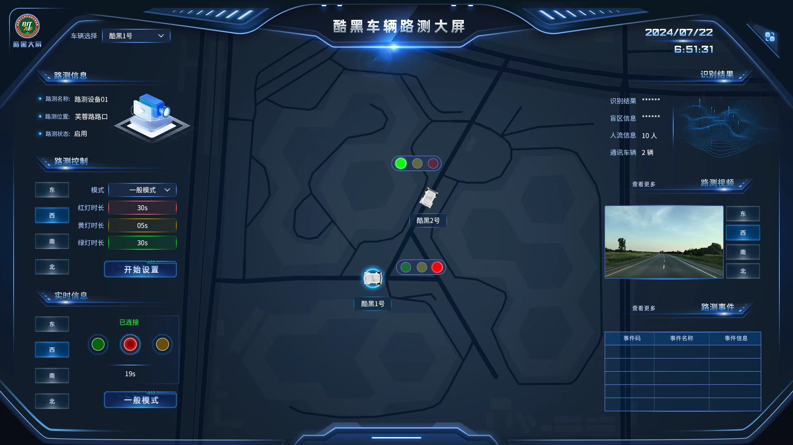

CLOUD CONTROL · 1920 × 1080
Cloud Control
Cloud Control
Design System
A delivery-ready visual language for vehicle dispatch, roadside devices, maps, video, status, and control actions. The specifications are grounded in actual Lanhu annotations and 1×/2× exported assets; retrospective recommendations are identified separately.

Delivered vehicle dispatch dashboard. The specification separates complex decorative assets from editable information layers.
Darkness is not the goal.
State recognition is.
Blue-black surfaces reduce environmental distraction, bright blue defines interactive boundaries, and green, yellow, and red are reserved for operational states. The following values come from exact Lanhu annotations and exported pixels.
Canvas
#081020Dark dashboard baseModal Surface
#00093AFive-camera modalPrimary Line
#4794FFSelection, borders, title barsModal Line
#7EB0FF2 px modal inner borderLabel
#A8CBFF14 px field labelsInfo
#04A3FFCritical real-time valuesSuccess
#36FF7DConnected and operatingDanger
#FF5656Stop, exception, dangerInformation and actions
use different voices.
Information text remains stable and clear, while critical actions and dashboard titles use stronger display type. Decorative module frames can remain raster assets, but content text should be implemented as editable HTML.
SampleTypefaceSizeUse
Vehicle Dispatch Dashboard
HYk2gj38 pxDashboard title with white-to-blue highlight
REMOTE START
YouSheBiaoTiHei20 / 32 pxControl buttons and short actions
125.56 km
SourceHanSansCN-Regular16 pxCritical values, states, and object data
Vehicle Name:
SourceHanSansCN-Regular14 pxField labels and table headers
Original Lanhu annotation: the “Vehicle Name” label uses SourceHanSansCN-Regular at 14 px / #A8CBFF; object value “KH” uses 16 px / #FFFFFF; the “Event Code” table header uses 14 px / #CDDFFF.
Stable side regions,
spatial context at the center.
Vehicle dispatch and roadside-device screens share one structure: objects and controls on the left, maps and positioning at the center, and status, video, and event feedback on the right.

OBJECT + CONTROL
MAP + LOCATION
STATUS + FEEDBACK
ObjectPositionSizeEvidence
Dashboard titlex796 / y46339 × 37Lanhu annotation
Vehicle selectorx247 / y70166 × 342 px / r2
Module-title framex43 / y150391 × 59PNG asset
Full-width header framex0 / y01920 × 2231× / 2×
Side framesx0 / y0692 × 10801× / 2×
Components define more than appearance.
They define states and delivery.
These components come from actual exported assets. The specification records both original dimensions and engineering recommendations, so editable text is not embedded in large raster images.
Base Control
166 × 34 px; 2 px border; 2 px radius. Used for selectors and basic actions.

Success Action
184 × 46 px. Green is reserved for confirmed, permitted, and successful states.

Danger Action
Used for stop and exception states, with explicit copy and secondary confirmation.

Status Indicators
53 × 54 px. State labels accompany color so meaning is never color-only.
Functional Icons
Switch: 42 × 42; play: about 31 × 32; close: 28 × 28. Delivered as transparent PNG assets.
Information State
Used for current modes and informational selections, separate from danger and success states.
Five camera feeds on demand,
without occupying the main view.
The original Lanhu modal uses three feeds above and two below. Detailed observation moves into the modal, while the main dashboard retains one preview and an entry point.
Vehicle Cameras
Left View
Cabin View
Right View
Front View
Rear View
1243 × 785 px
- Position: x339 / y148
- Background: #00093A
- Border: 2 px / #7EB0FF
- Top feeds: 380 × 239 px
- Bottom feeds: 288 × 182 px
- Title bar: 379 × 34 px
Separate decorative assets,
code components, and state data.
The original project included complete 1×/2× exports. This retrospective organizes them into maintainable engineering-delivery rules.
Keep as PNG Assets
- Complex glow and transparent decorative frames
- Vehicle, roadside-device, and pedestrian graphics
- Status indicators and complex light effects
- Textures that cannot be reproduced reliably in CSS
- Export Web @1x and @2x versions
Build in Code
- Body copy, values, states, and table text
- Solid backgrounds, standard borders, and radii
- Tables, lists, selectors, and modal layouts
- Disabled, loading, hover, and focus states
- Object selection and map-linked behavior
Evidence boundary: original dimensions, typefaces, color values, and version dates on this page come from the available Lanhu project. Recommendations such as an 8 px grid, code-rendered text, nine-slice scaling, and accessible state treatment were added during the portfolio retrospective and are not presented as a formal system that existed at the time.